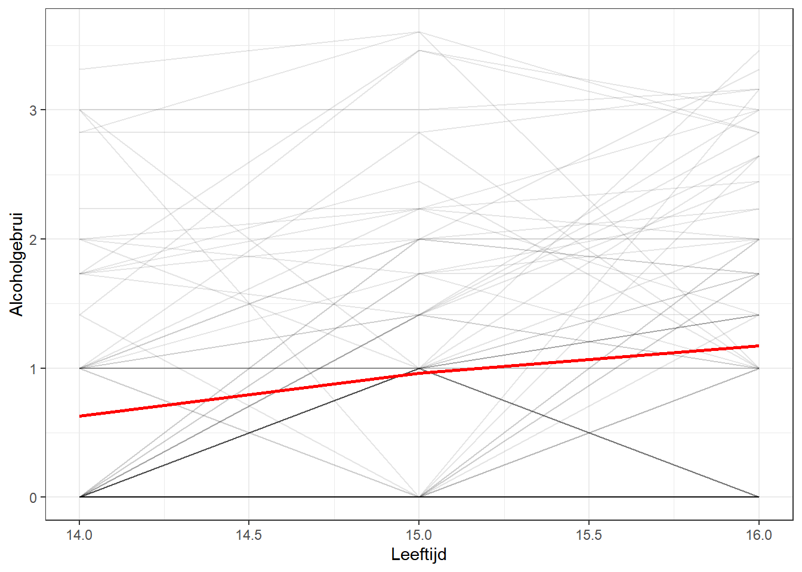
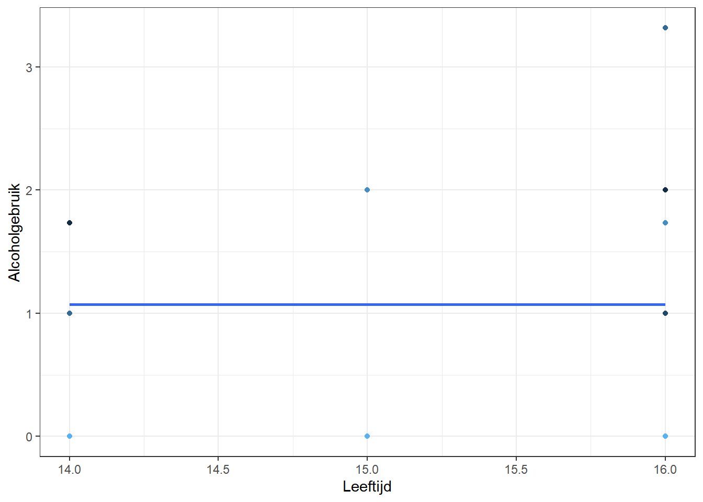
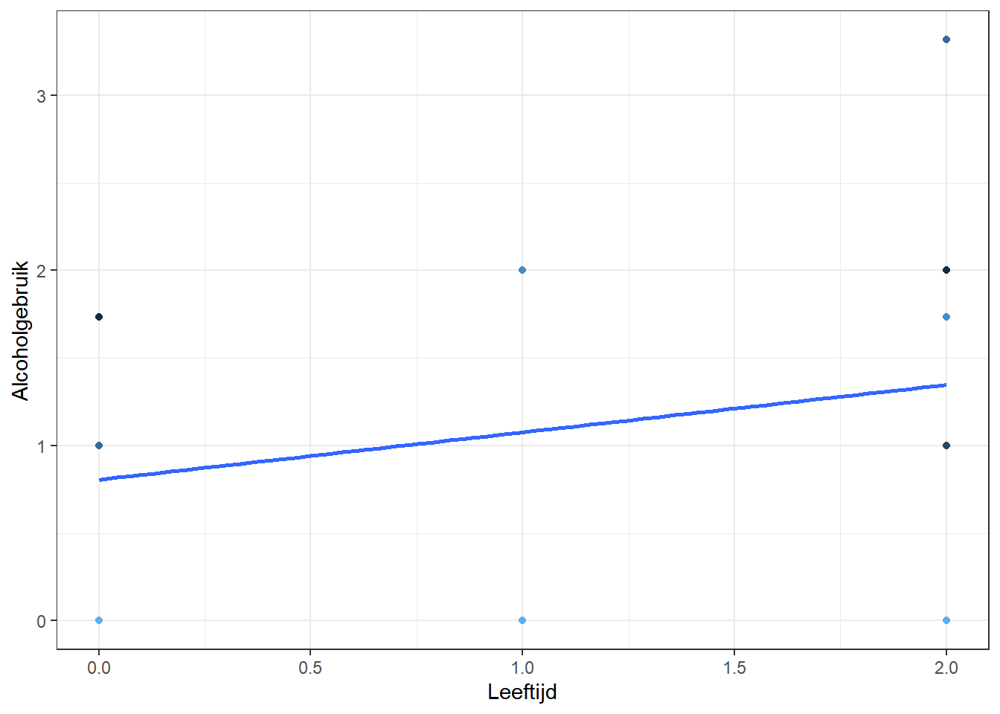
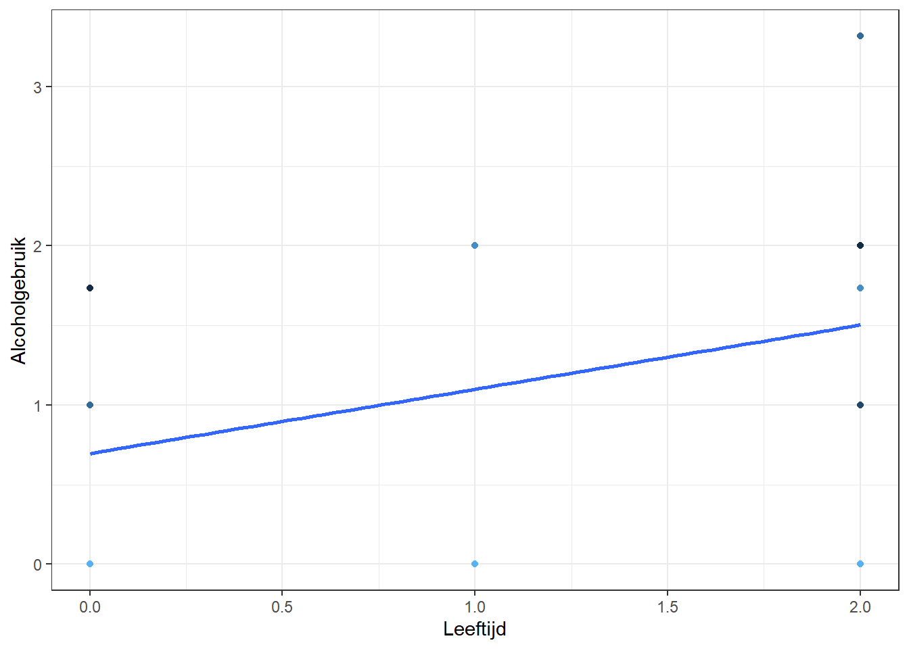

Dit is een post over multilevel analyse van longitudinale data met betrekking tot alcoholgebruik van jongeren.
analyse
Author
Alexander Cernat, bewerking Harrie Jonkman
Published
January 4, 2022
Het schatten van multilevel-modellen voor verandering in R
Longitudinale gegevens zijn heel boeiend omdat je ermee kunt kijken naar verandering in de tijd, een beter begrip krijgt van causale verbanden en gebeurtenissen en hun timing ermee kunt verklaren. Om dit te kunnen doen, moeten we verder gaan dan de klassieke statistische methoden, zoals OLS regressie en ANOVA, en modellen gebruiken die beter kunnen omgaan met complexiteit van de gegevens. Alexander Cernat schreef er een blog over hier die ik hier in het Nederlands overzet en waarbij ik alcoholdata van Willet en Singer gebruik/
Een populair model voor de analyse van longitudinale gegevens is het Multilevel Model voor Verandering; MultiLevel Model for Change (MLMC). Dit model maakt de schatting van verandering in de tijd mogelijk, terwijl rekening wordt gehouden met de hiërarchische aard van de gegevens (meerdere punten in de tijd genest binnen individuen). Het is vergelijkbaar met het Latente Groei Model; Latent Growth Modelzie deze post, maar hier wordt geschat met behulp van het multilevel model raamwerk (ook bekend als hiërarchische modellering of random effecten). Deze techniek maakt gebruik van het lange dataformaat (elke rij is is een rij gegevens op een specifiek tijdstip voor een individu).
Meer in het bijzonder kan het MLMC helpen:
- te begrijpen hoe de individuele en geaggregeerde verandering in de tijd verlopen;
- verandering te verklaren met behulp van tijdsvariërende (bv. tijd) en tijdsconstante (b.v. geslacht) voorspellers;
- variantie te ontleden in tussen- en binnen- variatie;
- gemakkelijk om te gaan met continue tijd, onevenwichtige gegevens (niet alle individuen zijn op alle tijdstippen aanwezig) en verschillende timings (niet iedereen geeft gegevens op precies hetzelfde moment).
Hier volgt een korte inleiding op MLMC, hoe hiermee te werken in R en hoe veranderingen zijn te visualiseren.
Laten we eerst de R-pakketten laden (deze moeten dus wel geïnstalleerd zijn). We zullen tidyverse gebruiken voor het opschonen en visualiseren van de data, lme4 voor het uitvoeren van de MLMC in R en sjstats voor het schatten van intra class correlation (icc)
Je kunt pakketten installeren met het install.packages() commando.
Laten we vervolgens de pakketten binnenhalen die wij bij deze analyse zullen gebruiken.
# pakket voor dataopschonen en visualiserenlibrary(tidyverse)
Warning: package 'tidyverse' was built under R version 4.1.3
v ggplot2 3.3.6 v purrr 0.3.4
v tibble 3.1.7 v dplyr 1.0.9
v tidyr 1.2.0 v stringr 1.4.1
v readr 2.1.2 v forcats 0.5.1
Warning: package 'ggplot2' was built under R version 4.1.3
Warning: package 'tibble' was built under R version 4.1.3
Warning: package 'tidyr' was built under R version 4.1.3
Warning: package 'readr' was built under R version 4.1.3
Warning: package 'dplyr' was built under R version 4.1.3
Warning: package 'stringr' was built under R version 4.1.3
-- Conflicts ------------------------------------------ tidyverse_conflicts() --
x dplyr::filter() masks stats::filter()
x dplyr::lag() masks stats::lag()
# pakket voor multilevel-modelerenlibrary(lme4)
Warning: package 'lme4' was built under R version 4.1.3
Loading required package: Matrix
Attaching package: 'Matrix'
The following objects are masked from 'package:tidyr':
expand, pack, unpack
# pakket om intra class correlation makkelijk vast te stellenlibrary(sjstats)
Laten we, voordat we aan de MLMC beginnen, eerst kijken naar de data die we willen analyseren. Hier gebruik ik alcuse (alcoholgebruik) met drie metingen. Dit is een longitudinale dataset van 82 jongeren.
We willen weten hoe alcoholgebruik in de tijd verandert en we willen die verandering begrijpen. Hierbij maken we een onderscheid tussen tussenvariatie (hoe de jongeren ten opzichte van elkaar veranderen) en binnenvariatie (hoe jongeren veranderen ten opzichte van hun eigen gemiddelde/trend).
Laten we deze gegevens eens onderzoeken. We kijken hiervoor naar de gegevens in lang formaat, die we zullen gebruiken voor de modellering en de grafieken. Hieronder zie je de eerste tien gegevens:
We zien dat elke rij een combinatie is van een jongere (variabele id (van 1 tot en met 4, die we in de analyse gebruiken)) en tijd (variabele age_14, alcoholgebruik op 14-jarige leeftijd). Dit is ook het formaat dat we nodig hebben voor een visualisatie met ggplot2.
Om te zien wat we gaan modelleren, kunnen we een eenvoudige grafiek maken met een gemiddelde veranderingslijn in tijd voor de hele dataset en een wirwar van lijnen voor de verandering van elk individu:
ggplot(alcohol1, aes(age, alcuse, group = id)) +geom_line(alpha =0.1) +# voeg individuele lijn met transparantie toestat_summary( # voeg gemiddelde lijn toeaes(group =1),fun = mean,geom ="line",size =1.0,color ="red" ) +theme_bw() +# goed theme voor visualisatielabs(x ="Leeftijd", y ="Alcoholgebrui") # de labels

We zien dus een hele lichte positieve en constante verandering in de tijd, maar vooral ook heel wat variatie in de manier waarop jongeren alcohol gebruiken (grijze lijnen). MLMC is in staat om beide dingen (het structurele en individuele) tegelijk te schatten!
Wat is multilevel modellering?
Multilevel modellering is een uitbreiding van regressie modellering (‘just regression’) waarin we als het ware verschillende bronnen van variatie uit elkaar trekken. Waarom is dit belangrijk?
Traditioneel gaat OLS-regressie er vanuit dat alle gevallen onafhankelijk zijn. Dit impliceert dat er geen correlatie is tussen de geobserveerde metingen als gevolg van zaken als clustering. Dit is vaak niet waar bij sociaal-wetenschappelijke gegevens. Individuen zijn bijvoorbeeld genest in huishoudens, klassen, buurten, regio’s en landen. Studenten zijn genest in klassen, scholen, regio’s en landen. Deze geneste structuur zorgt ervoor dat individuen op elkaar lijken. Zo zullen de gezondheidsuitkomsten waarschijnlijk vergelijkbaar zijn voor mensen die in dezelfde buurt wonen, vanwege bijvoorbeeld zelfselectie (vergelijkbaar inkomen en opleiding), kwaliteit van de gezondheidszorg of luchtkwaliteit. Als dit waar is, dan kunnen we mensen die uit dezelfde buurt komen niet als onafhankelijk behandelen.
Multilevel modellering lost dit probleem op door willekeurige effecten (d.w.z. variatie) te schatten voor de verschillende niveaus die in de gegevens aanwezig zijn. Op die manier worden de regressiecoëfficiënten (zoals standaardfouten) gecorrigeerd voor deze geneste structuur. Bovendien kan met dit soort modellen worden geschat hoeveel variatie van elk niveau afkomstig is. Dit kan zeer informatief zijn. Door bijvoorbeeld de variatie van de leerlingresultaten uit elkaar te halen op leerlingniveau, klasniveau en schoolniveau, kunnen we begrijpen wat de belangrijkste factoren zijn die de uitkomsten van de leerlingen beïnvloeden. Dit kan informatie opleveren voor theorie en beleid.
Multilevel modellering en longitudinale data
Longitudinale data zijn ook genest. Metingen op verschillende tijdstippen zijn genest binnen een individu. Deze waarnemingen zijn niet onafhankelijk, omdat stabiele individuele kenmerken (zoals genen, persoonlijkheid of context) leiden tot consistente uitkomsten binnen de individuen en over de tijd. Multilevel modellering kan dus helpen corrigeren voor dit geklusterd karakter, maar helpt ons ook om twee belangrijke bronnen van variatie in longitudinale gegevens uit elkaar te halen: tussen-variatie (tussen individuen) en binnen-variatie (binnen het individu).
Tussen-variatie heeft betrekking op de manier waarop individuen van elkaar verschillen wat de belangrijke uitkomst betreft (bv. in dit geval dat het ene individu gemiddeld een hoger alcuse score heeft dan het andere individu). Terwijl binnen-variatie, de tweede vorm van variatie, betrekking heeft op de manier waarop alcuse op een bepaalde meting verschilt van het individuele gemiddelde (bv. hebben zij een lager of hoger score op alcoholgebruik in vergelijking met hun normale inkomen).
Laten we, om deze vormen van variatie beter te begrijpen, eens naar de onderstaande grafieken kijken (een voor individu met idn=1 en de ander met idn=10).
Hier zien we de twee alcuse-scores van twee individuen en de individuele trends over de tijd (drie metingen). We kunnen de variatie tussen de lijnen zien als het verschil tussen de lijnen. Dit vertelt ons of de trend voor het ene individu anders is dan voor het andere. Als deze bron van variatie 0 zou zijn, dan zouden alle lijnen gelijk zijn. Als individuen zeer verschillende lijnen hebben, dan zal dit een belangrijke bron van variatie zijn. Met interne variatie wordt het verschil bedoeld tussen de individuele trend en de bijbehorende waargenomen scores. Als deze bron van variatie 0 zou zijn, zouden we alcuse bij elke meting perfect voorspellen en zou er geen interne variatie zijn. variatie zijn. Hoe groter deze bron van variatie, hoe meer de individuele waarden buiten hun eigen trend schommelen.
Het onvoorwaardelijke verandermodel (ook wel random effects genoemd)
Nu we wat basiskennis hebben van multilevel modellering en longitudinale gegevens kunnen we het uitproberen. Wij gaan gewoonlijk uit van een eenvoudig model dat enkel de binnen- en tussenvariatie wil scheiden. We kunnen het model definiëren als:
\(Y_ij=\gamma_{00}+u_{01}+e_{ij}\)
Waarbij:
\(Y_{ij}\) is de variabele van belang (bijvoorbeeld alcuse) en varieert per individu (i) en tijd (j)
\(\gamma_{00}\) is het intercept in de regressie. We kunnen dit interpreteren als het grote gemiddelde of het gemiddelde van de uitkomst over alle individuen en tijdstippen.
\(u_{0i}\) is de tussenvariatie en vertelt ons hoe verschillend jongeren van elkaar zijn in hun alcoholgebruik-score. Als iedereen hetzelfde scoort op alcuse, zou dit 0 zijn. Hoe groter de verschillen, hoe groter deze coëfficiënt zal zijn en dus de variatie is.
\(e_{ij}\) dit is het residu, maar heeft ook hier de interpretatie van binnenvariatie en vertelt ons hoeveel elk individu varieert rond zijn eigen gemiddelde. Hoe groter deze coëfficiënt, hoe meer individuen in hun uitkomsten op alcoholgebruik schommelen.
Nu we weten wat we willen modelleren, laten we eens kijken hoe we dat kunnen doen in R en met het pakket lme4. Voor het schatten van multilevel modellen zullen we het lmer()commando gebruiken. We moeten de data en de formule opgeven. Onze uitkomst is alcuse, dus dat staat aan de linkerkant van ~. Aan de rechterkant hebben we “1”, dat staat voor het intercept. Tussen haakjes definiëren we de willekeurige effecten. Hier zeggen we dat we het intercept (“1”) willen laten variëren per individu (| id). Dit alles leidt tot deze syntaxis:
# random intercept model m0 <-lmer(data = alcohol1, alcuse ~1+ (1| id))# resultaten checkensummary(m0)
Linear mixed model fit by REML ['lmerMod']
Formula: alcuse ~ 1 + (1 | id)
Data: alcohol1
REML criterion at convergence: 673
Scaled residuals:
Min 1Q Median 3Q Max
-1.8892 -0.3079 -0.3029 0.6111 2.8562
Random effects:
Groups Name Variance Std.Dev.
id (Intercept) 0.5731 0.7571
Residual 0.5617 0.7495
Number of obs: 246, groups: id, 82
Fixed effects:
Estimate Std. Error t value
(Intercept) 0.9220 0.0963 9.574
Laten we de belangrijkste coëfficienten eens interpreteren:
onder “Fixed effects” hebben we het “(Intercept)”, dat het grote gemiddelde is (\(\gamma_{00}\) en ons vertelt dat over alle tijdstippen en individuen de gemiddelde score 0.922 is.
“Random effects” vertegenwoordigt alles dat varieert met id, de tussen-variatie. In dit geval is de tussenvariatie voor het intercept (\(\beta_{0i}\)) 0.573
onder “Random effects” vertegenwoordigt de “Residual”-coëfficiënt de binnen-variatie. In dit geval is de binnen variatie voor het intercept \(e_{ij}\) 0.562
Om de tussen en binnen-variantie beter te begrijpen, berekenen we InterClass Coefficient (ICC), dat is de tussen-variatie gedeeld door de totale variatie (tussen en binnen-variatie opgeteld). Dit berekenen we met het sjstats-pakket waarmee we het percentage tussenvariatie berekenen van het m0-model (51%), het percentage variatie dat door de groep kan worden verklaard.
icc(m0)
Warning: 'icc' is deprecated.
Use 'performance::icc()' instead.
See help("Deprecated")
Dit is dus gewoon een verhouding van de tussen-variatie op de totale variatie en vertelt ons welk deel van de variatie tussen individuen is. In ons geval blijkt dat ongeveer 51% van de variatie in alcuse tussen jongeren komt, terwijl de resterende (~ 49%) binnen jongeren ligt. In wezen zou dit erop wijzen dat de verschillen op alcoholgebruik tussen jongeren net iets belangrijker zijn dan de verschillen op alcoholgebruik binnen jongeren.
Om beter te begrijpen wat het model doet, kunnen we de scores voorspellen en een grafiek maken met de voorspelde individuele score (lijnen) en de waargenomen scores (punten) voor vijf individuen:
# basis voor voorspellingalcohol1$pred_m0 <-predict(m0)alcohol1 %>%filter(id %in%1:5) %>%# haal er vijf jongeren uit, kunnen ook andere jongeren zijnggplot(aes(age, pred_m0, color = id)) +geom_point(aes(age, alcuse)) +# punten voor de geobserveerde alcgebruik-Totaal-scoresgeom_smooth(method = lm, se =FALSE) +# liniaire lijn voor voorspellentheme_bw() +# mooi themalabs(x ="Leeftijd", y ="Alcoholgebruik") +# Labels toevoegentheme(legend.position ="none") # geen legenda
`geom_smooth()` using formula 'y ~ x'

Het model van onvoorwaardelijke verandering
Het vorige model is nuttig om ons een idee te geven van hoeveel variatie we op elk niveau hebben, maar we willen ook kijken naar verandering in de tijd! Laten we het model dus uitbreiden:
In dit model voegen we tijd (metingen van veertienjarige leeftijd gemeten) toe als voorspeller. Nu stelt \(\gamma_{00}\) de gemiddelde score op alcoholgebruik voor wanneer de tijd 0 (alcoholgebruik op veertien jarige leeftijd) is, terwijl \(\gamma_{10}\) het veranderingspercentage van alcoholgebruik voorstelt wanneer de tijd met 1 toeneemt.
Om de zaken gemakkelijker te interpreteren, is het belangrijk te beginnen bij 0 zodat de \(\gamma_{00}\) de mooie interpretatie heeft van verwacht alcoholgebruik aan het begin van de studie. De tijdsvariabele ‘age_14’ (alcoholgebruik op 14-jarige leeftijd) kent al de waarden 0, 1 en 2
Nu kunnen we ons model uitvoeren. We voegen gewoon de nieuwe tijdsvariabele toe als een fixed effect:
# unconditionele veranderings model nu (a.k.a. MLMC)m1 <-lmer(data = alcohol1, alcuse ~1+ age_14 + (1| id))summary(m1)
Linear mixed model fit by REML ['lmerMod']
Formula: alcuse ~ 1 + age_14 + (1 | id)
Data: alcohol1
REML criterion at convergence: 654.1
Scaled residuals:
Min 1Q Median 3Q Max
-2.19816 -0.66940 0.03001 0.44728 2.66167
Random effects:
Groups Name Variance Std.Dev.
id (Intercept) 0.5966 0.7724
Residual 0.4915 0.7011
Number of obs: 246, groups: id, 82
Fixed effects:
Estimate Std. Error t value
(Intercept) 0.65130 0.11077 5.880
age_14 0.27065 0.05474 4.944
Correlation of Fixed Effects:
(Intr)
age_14 -0.494
Een belangrijk verschil met het vorig model zit in het fixed effects-deel. Nu interpreteren wij het intercept (0.651) als het verwachte alcoholgebruik-score aan het begin van de studie (wanneer ze veertien jaar zijn, age_14=0). Het effect van een jaar extra, 0.271, vertelt ons de gemiddelde veranderingssnelheid bij ieder van de twee metingen. De score op alcoholgebruik neemt dus elk jaar met 0.271 toe.
Laten we de resultaten opnieuw visualiseren op basis van het nieuwe model:
# De basis voor voorspelling van dit modelalcohol1$pred_m1 <-predict(m1)alcohol1 %>%filter(id %in%1:5) %>%# selecteer weer 5 individuenggplot(aes(age_14, pred_m1, color = id)) +geom_point(aes(age_14, alcuse)) +# observatiepunten voor VeerkrachtTotaalgeom_smooth(method = lm, se =FALSE) +# lineaire lijn gebaseerd op voorspellingtheme_bw() +# mooi themalabs(x ="Leeftijd", y ="Alcoholgebruik") +# goede labelstheme(legend.position ="none") # legenda verstoppen
`geom_smooth()` using formula 'y ~ x'

Nu zien we dat we twee vormen van tussenvariatie hebben. De coëfficiënt \(u_{0i}\) vertegenwoordigt de tussenvariatie aan het begin van het onderzoek terwijl \(u_{1i}\) de tussenvariatie in het tempo van de verandering vertegenwoordigt. Dit betekent dat we toestaan dat individuen verschillende alcoholgebruik-scores aan het begin hebben (age_14=0), maar ook verschillende trends laten zien.
Dit model willen we met lme4 uitvoeren. We kunnen eenvoudigweg “meting” of in dit geval “jaartal” toevoegen aan het willekeurige deel van het model:
We zien nu dus een positieve trend die te wijten is aan de tijdscoëfficiënt. De individuele lijnen lopen, algemeen gezegd, hier parallel aan. We nemen nu aan dat de verandering in de tijd voor alle individuen gelijk is. In meer technische termen nemen we aan dat er geen tussenvariatie is in de snelheid van verandering. Dat is een vrij sterke veronderstelling. In ons geval zouden we dat niet verwachten gezien de eerste grafiek die we hebben gemaakt (en die individuele lijnen die verschillende kanten opgingen). Laten we het model dus uitbreiden met de tussenvariatie in de veranderingssnelheid:
Nu zien we dat we twee bronnen van tussenvariatie hebben. De coëfficiënt \(u_0i\) vertegenwoordigt de tussenvariatie aan het begin van de studie terwijl \(u_1i\) de tussenvariatie in het tempo van verandering vertegenwoordigt. Dit betekent dat we toestaan dat individuen verschillen in alcoholgebruik aan het begin, maar ook verschillende trends kunnen kunnen laten zien.
Om een dergelijk model in lme4 uit te voeren. We kunnen eenvoudigweg “tijd” (age_14) toevoegen aan het willekeurige deel van het model:
# unconditional change model (a.k.a. MLMC) with re for changem2 <-lmer(data = alcohol1, alcuse ~1+ age_14 + (1+ age_14 | id))summary(m2)
Linear mixed model fit by REML ['lmerMod']
Formula: alcuse ~ 1 + age_14 + (1 + age_14 | id)
Data: alcohol1
REML criterion at convergence: 643.2
Scaled residuals:
Min 1Q Median 3Q Max
-2.48287 -0.37933 -0.07858 0.38876 2.49284
Random effects:
Groups Name Variance Std.Dev. Corr
id (Intercept) 0.6355 0.7972
age_14 0.1552 0.3939 -0.23
Residual 0.3373 0.5808
Number of obs: 246, groups: id, 82
Fixed effects:
Estimate Std. Error t value
(Intercept) 0.65130 0.10573 6.160
age_14 0.27065 0.06284 4.307
Correlation of Fixed Effects:
(Intr)
age_14 -0.441
In de resultaten zien we dat het random deel van het model nu twee coëfficiënten heeft die variëren naar id. Het “(Intercept)”, 0.65130, staat voor de variatie tussen het beginpunt van het onderzoek (\(\gamma_{0i})\), terwijl de coëfficiënt voor age_14, 0.271, staat voor de variatie tussen de veranderingssnelheden ( \(\gamma_{1i}\) ).
Als wij nu de voorspellingen onderzoeken, zien wij dat individuen zowel verschillende beginpunten als verschillende trends mogen hebben:
# laten we basis voor voorspelling definierenalcohol1$pred_m2 <-predict(m2)alcohol1 %>%filter(id %in%1:5) %>%# selecteer enkele individuenggplot(aes(age_14, pred_m2, color = id)) +geom_point(aes(age_14, alcuse)) +# punten van geobserveerde VeerkrachtTotaalgeom_smooth(method = lm, se =FALSE) +# liniaire lijn voor voorspellingtheme_bw() +# mooi themalabs(x ="Leeftijd", y ="Alcoholgebruik") +# goede labelstheme(legend.position ="none") # legenda verbergen
`geom_smooth()` using formula 'y ~ x'

Hoe groter de \(e_{0i}\)-coëfficiënt, hoe groter het verschil tussen de mensen aan het begin van het onderzoek, terwijl een grotere \(e_{1i}\) op meer uiteenlopende veranderingssnelheden wijst.
Conclusies
Dit geeft een idee wat multilevel model voor verandering ons in onderzoek kan bieden, hoe je het kunt schatten in R en hoe je deze verandering kunt visualiseren. Dit model is vergelijkbaar met het Latent Growth Model (Latent Groei Model) en daar zal ik ook een stukje over schrijven.